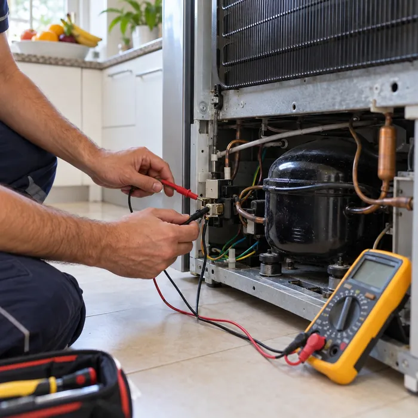

Arreglamos el día y la franja horaria. Si nos escribís temprano, buscamos que sea en el día.

03
Diagnóstico en tu casa
El técnico revisa el equipo con instrumental y te explica qué falla y por qué.
04
Presupuesto antes de reparar
Sabés cuánto sale antes de que toquemos nada. Con el precio claro, decidís si avanzamos.
Garantía por escrito en cada reparación
Al terminar te dejamos la orden de trabajo firmada, con lo que se hizo, los repuestos originales que se cambiaron y el plazo de la garantía. Si la falla vuelve, nos escribís con ese papel.
ServiMaxOrden de trabajo
Equipo
Diagnóstico
Presupuesto aprobado
Trabajo realizado
Repuestos
Garantía
Por escrito, con su plazo
Firma del técnicoFirma del cliente
Marcas
Reparamos estas marcas. ¿No ves la tuya? Escribinos con la marca y el modelo y te confirmamos.
Ariston
Atma
Aurora
BGH
Bosch
Brastemp
Candy
Carrier
Columbia
Consul
Coventry
Daewoo
Domec
Drean
Electra
Electrolux
Eslabón de Lujo
Fagor
Fedders
Frigidaire
Gafa
General Electric
Hitachi
Hoover
Indesit
Ariston
Atma
Aurora
BGH
Bosch
Brastemp
Candy
Carrier
Columbia
Consul
Coventry
Daewoo
Domec
Drean
Electra
Electrolux
Eslabón de Lujo
Fagor
Fedders
Frigidaire
Gafa
General Electric
Hitachi
Hoover
Indesit
Kelvinator
Kenia
Koh-i-noor
LG Electronics
Longvie
Mabe
Maytag
Noblex
Orbis
Patrick
Peabody
Philco
Philips
Samsung
Sanyo
Siam
Siemens
Sigma
Surrey
Top House
Toshiba
Westinghouse
Whirlpool
York
Zenith
Kelvinator
Kenia
Koh-i-noor
LG Electronics
Longvie
Mabe
Maytag
Noblex
Orbis
Patrick
Peabody
Philco
Philips
Samsung
Sanyo
Siam
Siemens
Sigma
Surrey
Top House
Toshiba
Westinghouse
Whirlpool
York
Zenith
Zonas de atención
Capital Federal y GBA Zona Norte. Escribí tu barrio o localidad y te decimos si llegamos.